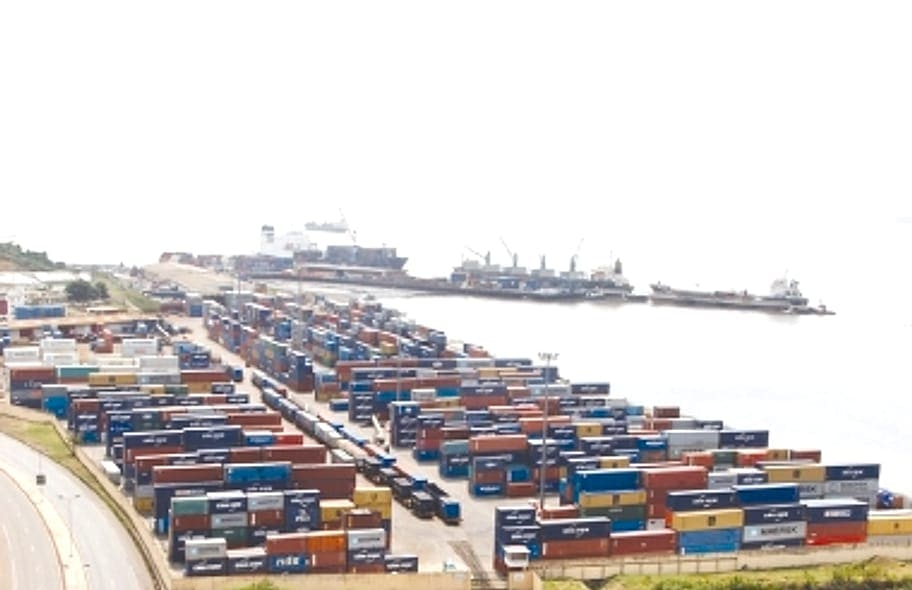
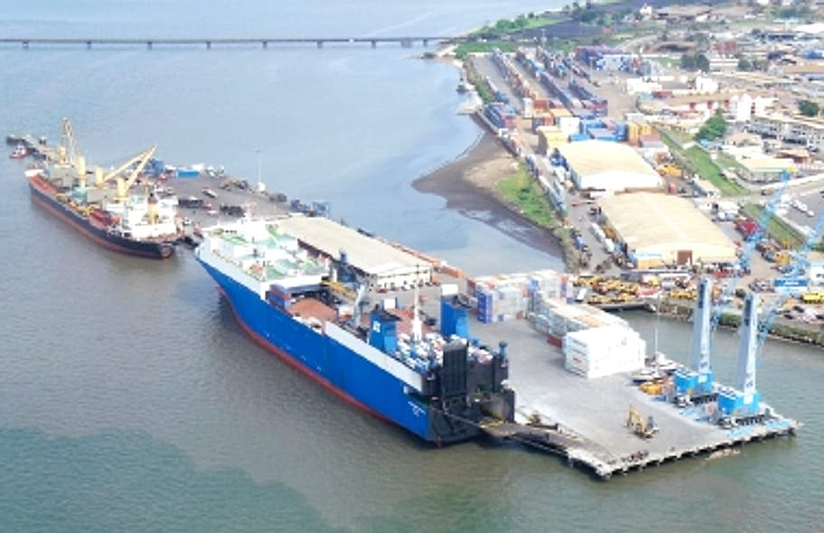
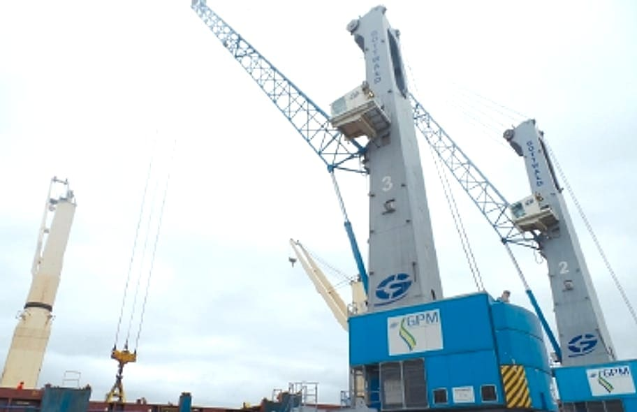
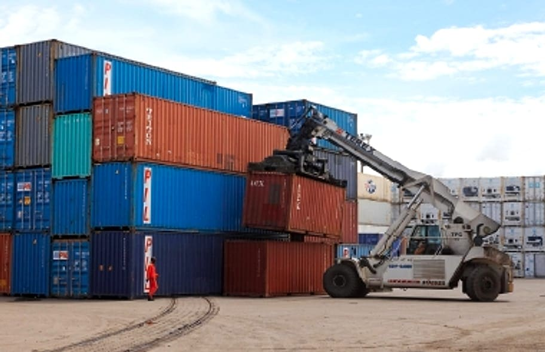
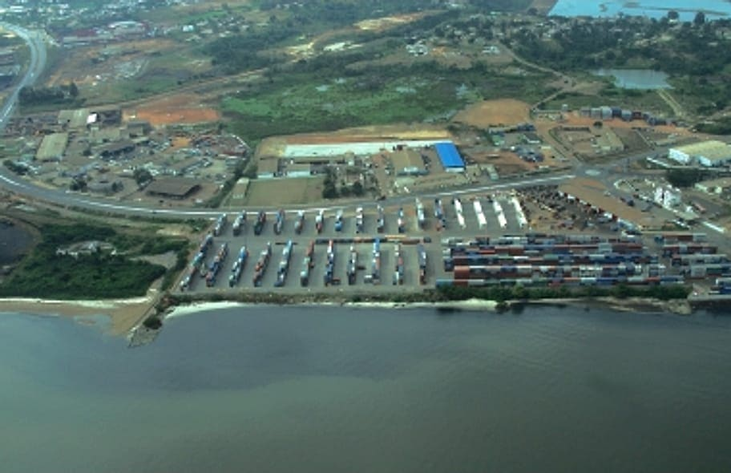
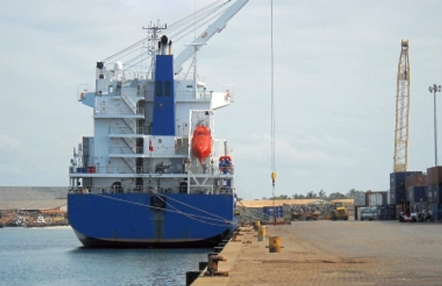
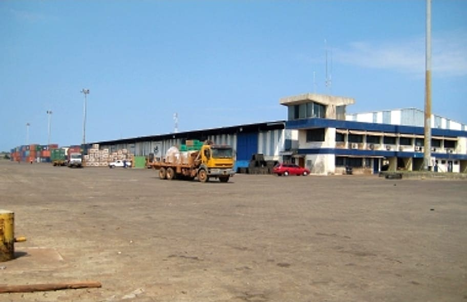
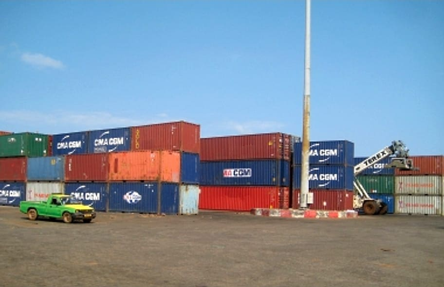

Portek International
Opérateur et spécialiste des équipements portuaires basé à Singapour, membre du groupe Mitsui.
Opérateur portuaire gabonais · groupe Portek
OwendoPort-Gentildepuis 2007
Accueil des navires, pilotage, remorquage, amarrage, eau et soutage, manutention des conteneurs, des véhicules et du vrac : Gabon Port Management accompagne chaque escale, de l'approche à l'appareillage.
de quai à Owendo, 4 postes à quai
de capacité conteneurs à Owendo
de parc à conteneurs
cadence de manutention atteinte
Owendo et Port-Gentil
de concession (2007–2032)
Sources : groupe Portek (installations d'Owendo) et étude Regards Suds, 2023 (cadence 2012–2016). Chiffres à confirmer par GPM.
L'entreprise
Gabon Port Management (GPM) est un opérateur portuaire gabonais, filiale du groupe singapourien Portek International, lui-même membre du groupe Mitsui. Il gère deux ports polyvalents : le port d'Owendo, à Libreville, et le port de Port-Gentil, à 160 km au sud, au cœur de la zone pétrolière.
Issue de SIGEPRAG, créée en 2004, l'entreprise a démarré ses activités sous le nom GPM le 1er novembre 2007, dans le cadre d'une concession de 25 ans pour l'exploitation partielle des ports de Libreville et de Port-Gentil, pour le compte de l'Office des Ports et Rades du Gabon (OPRAG).

Opérateur et spécialiste des équipements portuaires basé à Singapour, membre du groupe Mitsui.
L'Office des Ports et Rades du Gabon, pour le compte duquel GPM exploite la concession.
À la tête de Gabon Port Management, il porte notamment l'engagement de l'entreprise pour l'emploi des jeunes : en 2024, la Direction générale a accueilli une promotion de stagiaires dans les métiers HSE, grutiers, commercial, qualité et projets.
Source : L'Union, juillet 2024
Repères
Création de SIGEPRAG, la société dont est issue Gabon Port Management.
Le 1er novembre, début des activités sous le nom GPM, avec une concession de 25 ans pour le compte de l'OPRAG.
Cadence portée à 25–30 mouvements/heure ; durée d'escale ramenée de 4–5 jours à environ 1,5 jour.
Accueil de stagiaires à la Direction générale dans le cadre du programme d'employabilité des jeunes.
Échéance de la concession de 25 ans signée en 2007.
Nos ports
Deux ports polyvalents, complémentaires : la capitale et son hinterland d'un côté, la capitale économique et la zone pétrolière de l'autre.



Porte d'entrée maritime de la capitale, le port d'Owendo traite conteneurs, navires rouliers et véhicules, marchandises conventionnelles et vrac, avec un poste dédié aux produits pétroliers et gaziers.
Caractéristiques publiées par le groupe Portek, à confirmer par GPM.



À 160 km au sud de Libreville, au cœur de la capitale économique du pays, le port de Port-Gentil accompagne les activités pétrolières et offshore autant que le commerce maritime de la région.
Services
Des pilotes embarquent à bord pour conduire en sécurité l'entrée, la sortie et les mouvements des navires.
Remorqueurs portuaires pour l'assistance aux manœuvres d'accostage et d'appareillage.
Assistance à l'amarrage et au largage des navires, avec vedette dédiée.
Fourniture d'eau aux navires en escale, sur demande du bord ou du consignataire.
Soutage (bunkering) et eau douce à Port-Gentil, seul port du pays à offrir ces services.
Chargement et déchargement par grues mobiles portuaires, gestion du parc et des reach stackers.
Opérations RoRo et débarquement de véhicules, stockés sur un parc dédié.
Marchandises diverses, colis lourds et vracs, manutentionnés à quai.
Magasin couvert de 4 000 m² et parc véhicules de 1,2 ha à Owendo.
Entretien et développement des infrastructures, levés hydrographiques des accès.
Mode d'emploi
Le consignataire transmet les caractéristiques du navire et les services souhaités.
GPM confirme l'escale et attribue un poste et un créneau.
Le pilote embarque, les remorqueurs assistent l'accostage.
Manutention, avitaillement, soutage selon le port.
Départ assisté, puis facture des prestations réalisées.
Flotte & équipements
La flotte de servitude et les équipements de manutention mobilisés au port d'Owendo.
Source : groupe Portek, port d'Owendo.
Clients & partenaires
Armateurs et logisticiens cités par le groupe Portek parmi les clients du port d'Owendo.
Source : groupe Portek. Les noms sont cités à titre de référence, sans reproduction des marques.
Autorité concédante pour le compte de laquelle GPM exploite les ports.
Groupe portuaire basé à Singapour, actionnaire de GPM.
Groupe japonais auquel appartient Portek International.
HSE & sûreté
Équipements de protection, consignes de quai et préparation de chaque manœuvre pour protéger les équipes, les navires et les marchandises.
La sûreté des installations portuaires s'inscrit dans le cadre du code international ISPS : contrôle des accès, exercices, coordination avec les autorités.
Prévention des pollutions lors des opérations d'avitaillement et de soutage, gestion des déchets et vigilance sur le plan d'eau.
Formation aux métiers portuaires et transmission des savoir-faire, du grutier au pilote.
Dans le cadre du programme d'employabilité des jeunes, GPM a ouvert ses métiers à une nouvelle génération :
Actualités
La Direction générale accueille une promotion de stagiaires dans cinq métiers.
Lire l'articleGrues mobiles, cadences et durée d'escale : une étude revient sur les gains de productivité.
Lire l'étudeL'autorité portuaire, concédante de GPM, présente sa vision des ports gabonais.
Lire l'entretienQuai, équipements, capacité et clients : la fiche du port exploité par GPM.
Ouvrir la ficheCarrières
Pilotes, grutiers, mécaniciens, agents d'exploitation, commerciaux, HSE : rejoignez les équipes qui font tourner les ports d'Owendo et de Port-Gentil. Les jeunes diplômés peuvent aussi postuler au programme de stages.
Démonstration Offres d'exemple publiées depuis l'espace de gestion.
Espace de gestion
Escales et plan de quai, pilotage et remorquage, terminal, soutage, facturation, achats, maintenance de la flotte, ressources humaines et sûreté : chaque service travaille sur les mêmes données, avec ses circuits de validation et ses tableaux de bord.
Mot de passe identique pour tous les profils : demo2026
| Profil | Identifiant | Mot de passe | Accès |
|---|---|---|---|
| Direction généraleAccès complet | direction | demo2026 | Entrer → |
| Exploitation portuaireEscales, quai, services maritimes | exploitation | demo2026 | Entrer → |
| CommercialArmateurs, demandes d'escale | commercial | demo2026 | Entrer → |
| FinancesFacturation, budgets, paie | finance | demo2026 | Entrer → |
| TechniqueFlotte, engins, maintenance | technique | demo2026 | Entrer → |
| Achats & magasinDemandes, commandes, stocks | achats | demo2026 | Entrer → |
| Ressources humainesRecrutement, stages, personnel | rh | demo2026 | Entrer → |
| HSE & sûretéISPS, accès, incidents | hse | demo2026 | Entrer → |
Galerie

Contact
Armateurs, consignataires, chargeurs, fournisseurs, candidats ou journalistes : nos équipes d'Owendo et de Port-Gentil vous répondent.
Zone portuaire d'Owendo, B.P. 394, Libreville
Fax 011 70 31 40 · Itinéraire
Port de Port-Gentil, B.P. 932
Fax 011 56 42 06 · Itinéraire